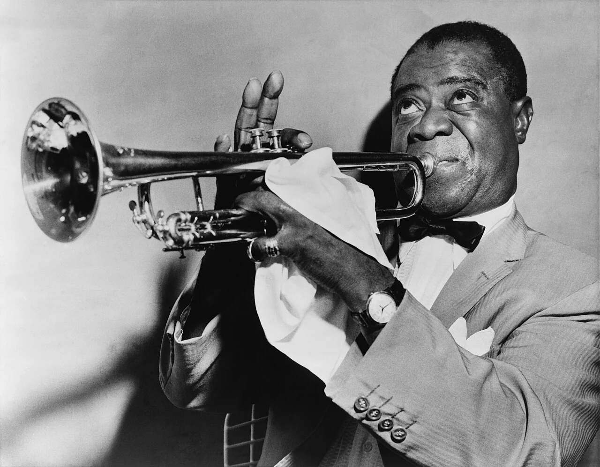

Cazın başlangıcı tek bir geceye, tek bir kişiye ya da kusursuzca belirlenmiş bir tarihe sığmaz. Yirminci yüzyılın başlarında New Orleans’ta belirginleşen bu müzik, siyah toplulukların yaratıcılığı ve kentte yan yana yaşayan farklı müzik gelenekleri içinde gelişti. Zamanla dans müziğinden kayıt endüstrisine, büyük orkestralardan küçük doğaçlama topluluklarına uzandı; her dönemde eski sesleri geride bırakmak yerine onlarla konuştu.
New Orleans: müziğin iç içe geçtiği bir şehir
New Orleans’ın liman kenti oluşu, yoğun göç ve zengin toplumsal hayatı, müziğin gündelik yaşamın güçlü bir parçası olmasını sağladı. Cazın kökleri özellikle Afrikalı Amerikalı toplulukların müzik ve dans geleneklerinde yer alır; blues, spiritüeller, ragtime, bando müziği ve Afrika-Karayip ritimleri bu çevrede birbirini etkiledi. Bu etkileşim, bütün geleneklerin eşit koşullarda buluştuğu anlamına gelmiyordu: ırkçılık ve ayrımcılık müzisyenlerin çalışma ve dolaşım imkânlarını da biçimlendiriyordu.
New Orleans Jazz National Historical Park’ın tarihçesi, cazın gelişimini şehrin geçit törenleri, dans salonları, sosyal kulüpleri ve mahalle hayatıyla birlikte ele alır. Müzik yalnızca sahnede dinlenen bir eser değildi; yürüyüşlere, kutlamalara, cenazelere ve dans gecelerine eşlik ediyordu. Böyle bir ortamda çalgıcıların birbirini dinleyerek müziği anlık biçimde değiştirmesi, cazın ayırt edici özelliklerinden biri hâline geldi.
Doğaçlama: birlikte dinleyip birlikte cevap vermek
Erken New Orleans topluluklarında kornet, klarnet ve trombon gibi çalgılar melodiyi farklı çizgilerle aynı anda işleyebiliyordu. Buna kolektif doğaçlama denir: müzisyenler yalnızca sırayla solo atmaz, birbirlerinin cümlelerine eşzamanlı olarak karşılık verir. Ritim bölümü de bu etkileşimin zeminini kurar. Sonuç, her icrada küçük ayrıntıları değişebilen, ama çoğu zaman dinleyiciyi dansa çağıran canlı bir müzikti.
Doğaçlama, hazırlıksız çalmak demek değildir. Caz müzisyenleri ezgiyi, armoniyi, ritmi ve topluluğun ortak işaretlerini öğrenir; sonra bu bilgi içinde yeni bir yol bulur. Bir solonun çekiciliği, yalnızca çalan kişinin ne kadar hızlı olduğunda değil, başkalarının sesini duyup ona nasıl yanıt verdiğinde de yatar.
Kayıtlar ve Büyük Göç ile genişleyen ses
1917’de Original Dixieland Jazz Band’in yaptığı ticari kayıt, “jazz” adını ve New Orleans üslubunu geniş kitlelere taşıdı. Bu, cazın o yıl icat edildiği anlamına gelmez; müzik, kayıt piyasasının ilgisinden önce de kentte çalınıp gelişiyordu. Plaklar, daha önce belli bir salonda duyulan üslubu başka şehirlere ulaştırdı ve müzisyenlerin yorumlarını tekrar tekrar dinlenebilir hâle getirdi.
Afrikalı Amerikalıların Güney’den Kuzey ve Batı kentlerine kitlesel göçü, cazın yeni dinleyiciler ve sahneler bulmasında önemli rol oynadı. Chicago ve New York’taki topluluklar, New Orleans’tan taşınan müzisyenlerin yanında yeni kuşakların katkısıyla şekillendi. Louis Armstrong’un King Oliver’ın topluluğunda yetişip daha sonra kendi kayıtlarıyla öne çıkması, cazın toplu doğaçlamadan belirgin solo anlatımlara doğru genişleyen imkânlarını görünür kıldı.
Swing: büyük orkestralar ve dans pistleri
1930’larda büyük orkestralar, yani big band’ler, cazın en görünür biçimlerinden birine dönüştü. Bölümlere ayrılmış trompet, trombon ve saksofon grupları düzenlenmiş pasajları çalarken, solistler bu yapının içinde doğaçlama alanı buluyordu. Duke Ellington, Count Basie ve Benny Goodman gibi orkestraların müziği dans salonlarında, radyoda ve turnelerde geniş kitlelere ulaştı.
Swing yalnızca belirli bir ritim kalıbı değil, müzisyenlerin nabız ve vurguyla kurduğu ortak bir histir. Big band düzenlemeleri topluluğun sesini büyüttü; sololar ise tek tek müzisyenlerin karakterini öne çıkardı. Bu iki yönün birlikte varlığı, caz tarihinde topluluk ile bireysel ifade arasındaki gerilimin ve uyumun iyi örneklerinden biridir.
Bebop’tan özgür caz ve füzyona
1940’larda bebop, küçük toplulukların hızlı tempolu ve armonik açıdan daha hareketli müziğiyle öne çıktı. Charlie Parker, Dizzy Gillespie ve Thelonious Monk gibi isimler cazın dinleme ve çalma beklentilerini genişletti. Bebop, cazı yalnızca dans müziği olarak görmeyen bir yaklaşımı güçlendirdi; ancak dansla bağı tümüyle koparan tek ve kesin bir dönüm noktası gibi düşünülmemelidir.
Sonraki yıllarda cool jazz, hard bop, modal caz ve özgür caz gibi farklı yönelimler gelişti. 1960’ların sonlarından itibaren bazı müzisyenler caz doğaçlamasını rock, funk ve elektrikli çalgılarla buluşturan füzyon çalışmalarına yöneldi. Bu akımlar birbirini sırayla silip süpürmedi; aynı dönemde farklı sahnelerde yan yana var oldular. “Caz” başlığı altındaki çeşitliliğin bir kısmı da tam burada yatar: müzisyenler geleneği korumanın tek yolunun onu olduğu gibi tekrarlamak olmadığını gösterdiler.
Bugün: geleneğin içinde yeni bir ses
Caz artık New Orleans’la sınırlı değil. Dünyanın farklı şehirlerinde yerel müziklerle, yeni teknolojilerle ve başka türlerle karşılaşarak yeniden yorumlanıyor. Her caz icrasında aynı çalgılar, aynı armoniler ya da aynı doğaçlama anlayışı bulunmuyor. Yine de dinlemek, karşılık vermek ve müziği o anda birlikte kurmak, bu tarihin güçlü ortak damarlarından biri olmayı sürdürüyor.
Cazın dönüşümünü bir “en iyi dönemler” sıralaması olarak okumak yerine, her kuşağın kendi koşulları içinde açtığı yeni alanlar olarak görmek daha açıklayıcıdır. Kayıt teknolojisi, göç, dans kültürü, ırkçılık, sanatçının ekonomik koşulları ve dinleyici alışkanlıkları müziğin yönünü etkiledi. Bir kulüpte çalınan kısa bir solo bile bu büyük tarihin içinden geçer: geçmişi hatırlar, ama aynı anda yalnızca o geceye ait bir şey söyler.
Kaynaklar
- National Park Service, New Orleans Jazz National Historical Park, “Jazz Origins in New Orleans” ve “A New Orleans Jazz History, 1895–1927”.
- Jazz at Lincoln Center, “What is Jazz?”; cazın kökleri ve dönemsel dönüşümleri.
- Jazz at Lincoln Center, “Jazz and the Great Migration”.
- Görsel: World-Telegram staff photographer, “Louis Armstrong in 1953”, Library of Congress; Wikimedia Commons kaydında kamu malı olarak işaretlenmiştir. Görsel WebP’ye dönüştürülmüştür.
Cazın tarihi çok sayıda bölgesel sahneyi, sanatçıyı ve geleneği kapsar. Bu yazı, geniş tarihin temel dönemeçlerine odaklanan bir giriş niteliğindedir.